# 安装 hexo 和部署到 github
# 下载 NodeJs
下载 NodeJs 地址: Download | Node.js (nodejs.org)
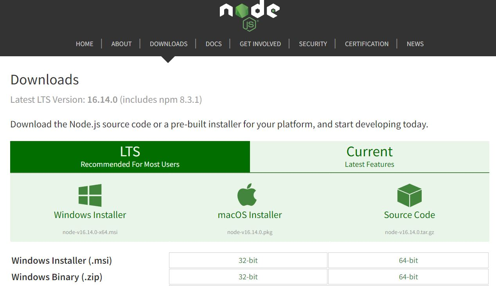
默认点击 windows installer 即可
安装时一路 next 即可，不用安装其他，但安装地址如需要可以更改 (一般不放 C 盘)
# 下载 git
下载 git 地址： https://npm.taobao.org/mirrors/git-for-windows/v2.22.0.windows.1/Git-2.22.0-64-bit.exe
下载后会有一个 git bash 命令行工具
# 检查 NodeJs、npm 和 git 版本及安装
打开 cmd 执行以下命令
node -v | |
npm -v | |
git --version |
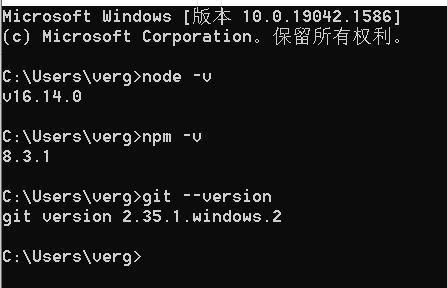
出现版本号即为安装成功
# NodeJs 环境变量配置
# 修改模块安装和缓存路径
在你安装 nodejs 的目录下新建一个名字为 node_cache 的文件夹
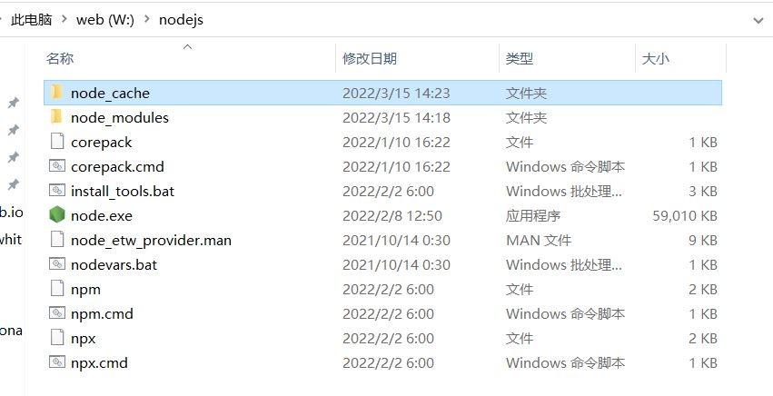
打开 cmd，使用命令修改模块安装路径，“” 里为自己的 nodejs 的路径
npm config set prefix "" |
使用命令修改缓存路径，“” 里为自己的 node_cache 文件夹的路径
npm config set cache "" |
最后使用命令检查是否配置成功
npm config get prefix | |
npm config get cache |
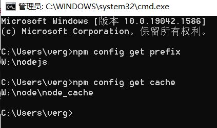
# 配置环境变量
点击 "我的电脑" 右键 — 属性 — 高级系统设置 — 环境变量 — 用户变量 — 编辑 — 将 nodejs 默认配置路径删除 (有就删，没有可以不管)
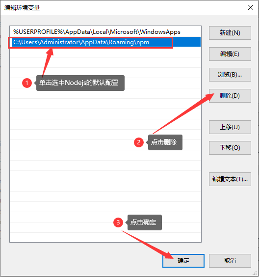
点下方的系统变量的新建，填入图片里的信息
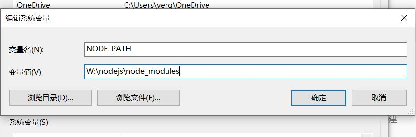
打开 cmd，输入命令 "node"，回车，输入 require ('cluster')，出现配置说明成功
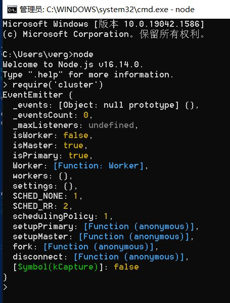
在装有 install.sh 脚本的目录下右键打开 git，输入
source install.sh test_node | |
source install.sh test_git |
出现版本号和成功提示 环境变量配置成功
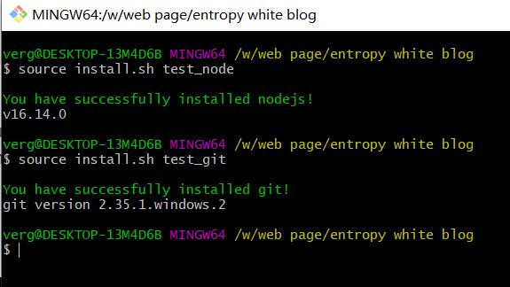
创建 github
# 安装 Hexo
在你想放置博客的文件夹下右键打开 git bash 执行下列命令
curl -O https://cdn.jsdelivr.net/gh/kjhuanhao/hexo-script@master/install.sh |
会在你右键的目录下安装一个 install.sh
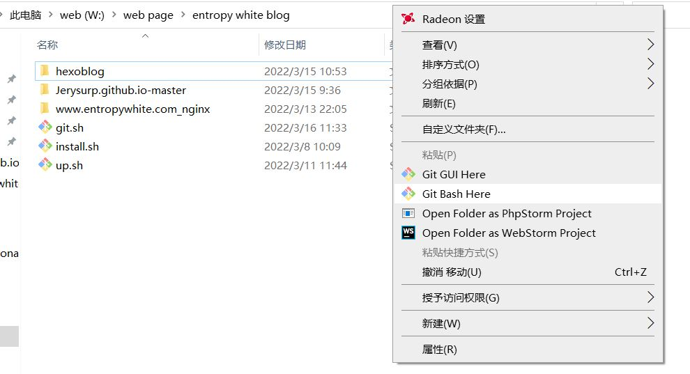
在装有 install.sh 的目录下，打开 git bash 执行下列命令
source install.sh hexo_win |
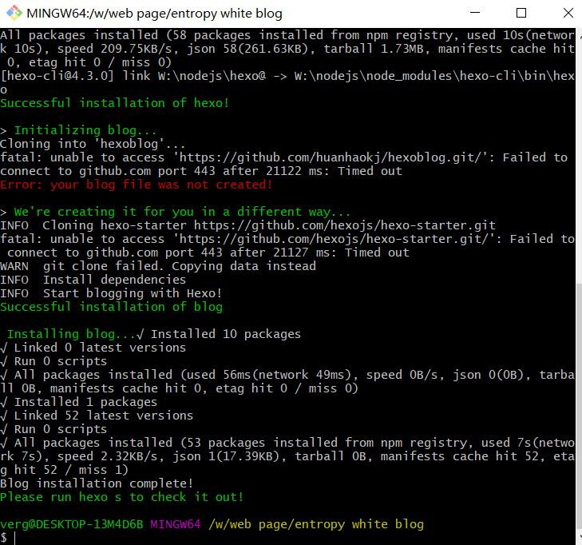
中间红色的错误是验证你的 github，如果弹出则输入你的 github 的账号密码，如果没有弹出也可以不管，出现最后一句话后，在你的博客目录下会出现一个 hexoblog 文件夹；
进入博客目录下，打开 git bash，输入下列命令
hexo g | |
hexo s |
打开浏览器输入
http://localhost:4000 |
即可查看自己的初始博客
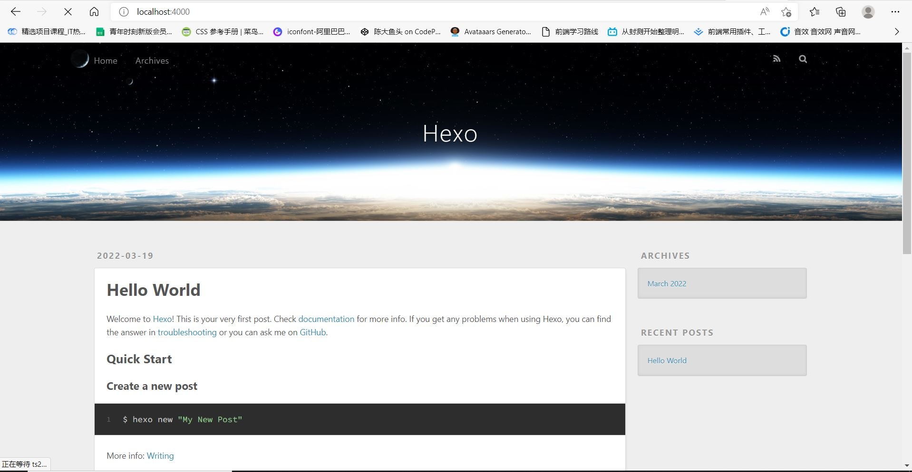
# 创建 github 仓库
https://github.com/ |
先要注册一个 GitHub 账户
注册完登录后，在 GitHub.com 中看到一个 New repository，点击 new 新建仓库
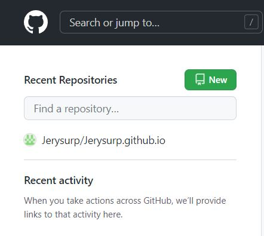
输入 Repository name，建议设置为注册 github 名字.github.io
Jerysury.github.io |
勾选 Add a README file 自述文件（后续有用），待 Create repository 绿色框亮起则点击创建仓库
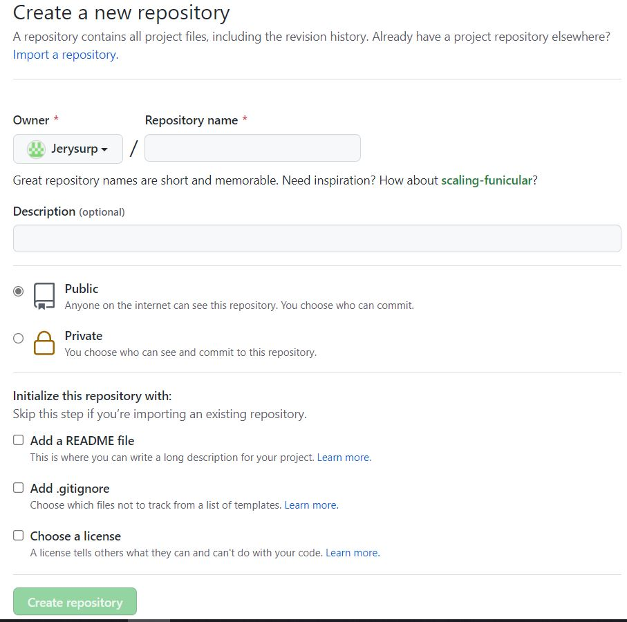
# 获取 SSH 密钥
打开 git bash，输入下列命令
git config --global user.name "yourname"
git config --global user.email "youremail"
yourname 输入你的 github 用户名
youremail 输入你的 github 注册时的邮箱
输入下列命令查看输入是否正确
git config --global --list |
确保无误后，输入下列命令获取 ssh 密钥
ssh-keygen -t rsa -C "youremail" |
出现第一个选项时输入 y，剩余一直空格即可

创建成功后在 C:/ 用户 / 用户名 /.ssh 中找到密钥，带有 pub 后缀的是公钥，没带有 pub 后缀的是私钥，右键用记事本方式打开 id_rsa.pub 文件，复制里面的公钥
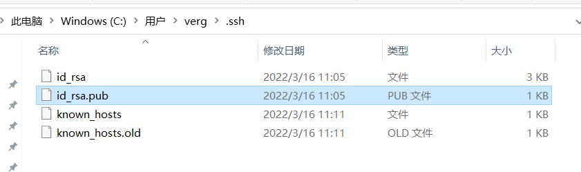
回到 github，点击右上角头像，点击 Settings
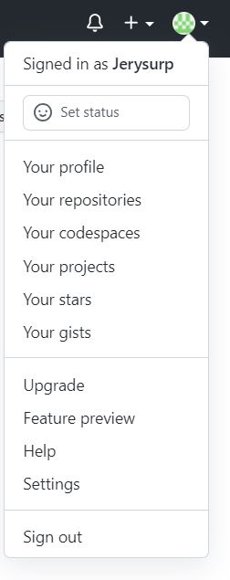
点击 Access 下方的 SSH and GPK keys，点击 New SSH key
title 输入密钥名，key 里粘贴上一步中所复制的公钥，点击 Add SSH key 添加密钥，即可添加成功
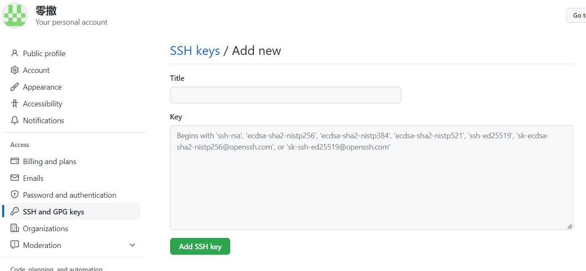
输入下列命令测试是否连通 github
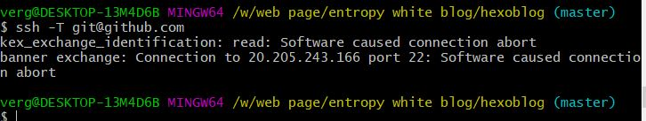
我这里不知道为什么 ip 去到了美国微软哪里，搜了很多办法也没修好，不过网址也能正常运作，我就暂时不管了
这是成功界面
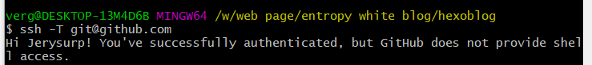
# 部署博客
在你的博客根目录下打开_config.yml
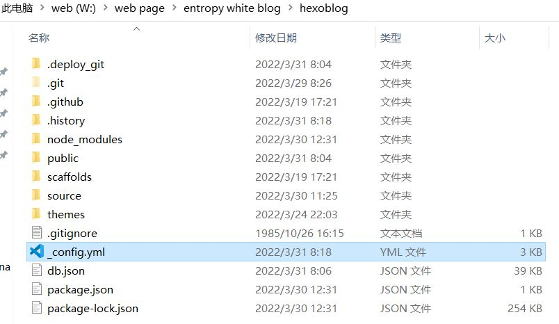
打开后拉到最下面，输入图片中的内容
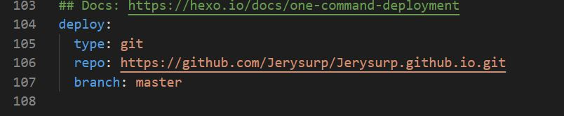
type：指定 git
repo：你的 github 仓库地址，从仓库地址页面点击 Code，复制其 https 或 git 链接
branch：github 仓库分支
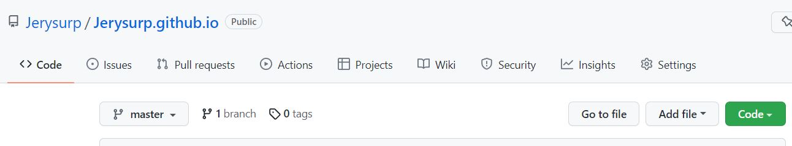
在博客根目录下打开 git bash，输入指令安装依赖
npm install hexo-deployer-git --save |
安装完后输入
hexo g | |
hexo d |
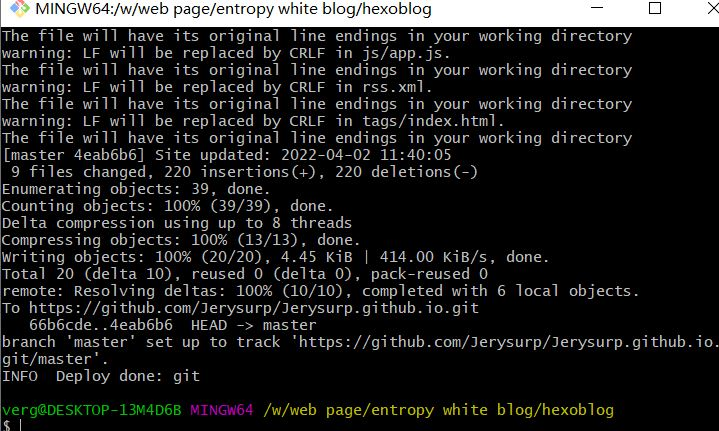
出现以上提示前往仓库查看是否有上传成功，报错不用管，不影响
输入 http:// 你的 github 用户名.github.io 即可访问博客
# 使用域名访问博客
在完成上面基础后，可以正常访问博客后，可使用域名来代替 github 的网址访问博客
首先你需要获取一个域名，无论是腾讯云还是阿里云等等都可以，去自定义一个域名购买，域名一年制，只要后缀不是.com 之类的都很便宜，获取域名就不演示了，百度下都知道
# 修改或添加域名文件
在放置你博客文件的仓库中，先查看有没有 **“README.md”** 这个文件，这个在创建仓库时候有选过。
如果有，则会在仓库底下有一栏这样的信息，点击右上角的笔，修改为你购买的域名（不要 www），点击最下方绿色按钮完成修改
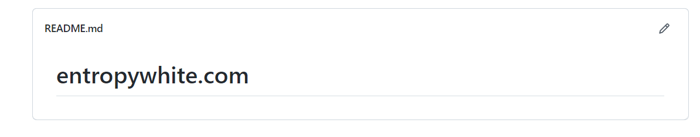
如果没有，则在仓库中，点击 Add file，Create new file，文件名字填写 READNE，内容填写你购买的域名（不要 www）
好像如果没有的话，最下方会提示你缺少这个文件，然后你可以选择去创建
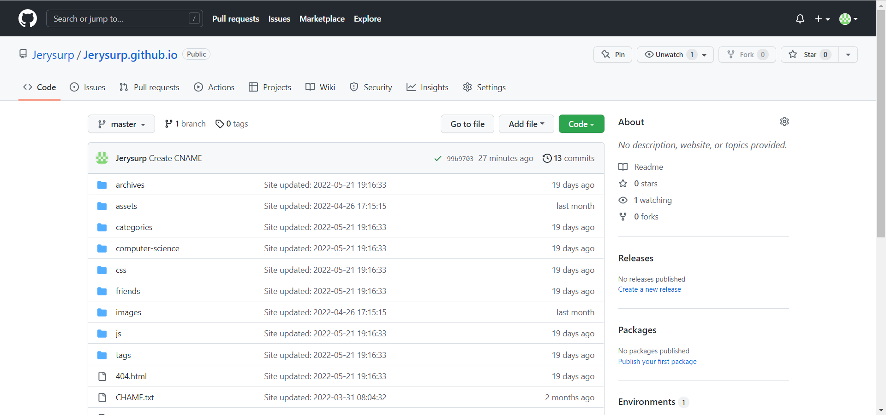
设置完文件后，点击仓库的 Settings，在侧边栏点击 Pages，在 Custom domain 中输入你购买的域名（不要 www），点击 save，这时候会提示你 dns 之类的错误，先不管
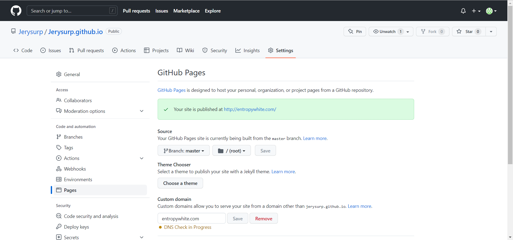
去到你所购买域名的客户商，查找该客户商的 DNS 解析（每家都不一样）
添加两行记录
一行主机记录为 @，类型为 CHAME，记录路径为你的仓库名
一行主机记录为 www，类型为 CHAME，记录路径为你的仓库名
这样带不带 www 都可以访问这个域名
顺带提一句，这里可以解析为你 github 仓库的 ip 地址，但是 github 哪里的 dns 会告诉你转为仓库名
回到 github 哪里，刷新页面重新检查域名 DNS（如果没自动检查就点击旁边的按钮）
没问题之后最上方会显示你的网址准备好了，复制网址即可让他人访问你的博客了
# 关于 SSL（https）
在自定义域名的下方是有一个强制启动 HTTPS 链接的 Enforce HTTPS，因为我在域名哪里弄了 SSL 证书，勾选了这个之后就会提示我的博客链接不安全，证书来自 github（外网缘故？）
我的建议还是获取证书去域名哪里安装较好
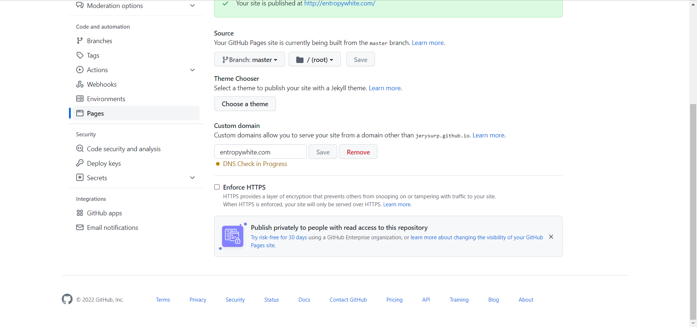
这里以腾讯云为例，搜索 SSL 证书进入此界面，点击申请免费证书，经过里头的填写相关信息即可申请一张一年的免费证书（同一主域最多申请 20 张，也就是 20 年）
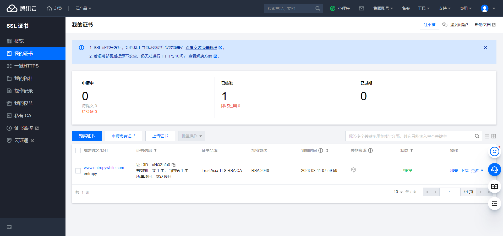
申请到之后，会让你进行 DNS 验证（有手动和自动，区别在于你之前是否域名进行解析）
待证书审核通过后可以下载保存
后面的流程说实话我忘了。请大家自行百度